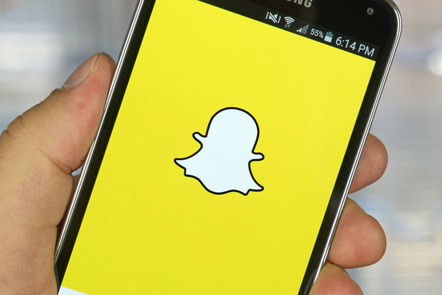

About two years ago, Instagram was a platform where people could post an abundance of photos to share with their followers. In addition, privacy policies are manditory to have so no hackers are able to access your account which is why today you can accept only certain people to follow you. Overtime, Instagram has quickly become one of the safest platforms.
The main purpose of Snapchat is to share snaps with your friends, Instagram is pretty similar because you can share stories with your followers. Although, Instagram has recently been used a lot more due to the new features.
The purpose of snapchat is to allow you to share photos, videos, texts, locations and drawings with your friends or with various people. Which is why Snapchat is one of the most used platforms.
Snapchat became hugely popular when people started using Snapchats's animated filters which are enormously popular and, also from the snapchat streaks. Snapchat can also help others keep up to date with their favourite celebrities by tracking them.
A Snapchat streak is when you send direct snaps back and forth with a friend for several consecutive days. The longer you go without breaking the chain of communication, the longer your streak is.So keep the chain going!!

Facebook is an American online social media and social networking service company based in Menlo Park, California. Its website was launched on February 4, 2004, by Mark Zuckerberg, along with fellow Harvard College students and roommates Eduardo Saverin, Andrew McCollum, Dustin Moskovitz and Chris Hughes.
The purpose of Facebook is to make the world more open and connected. Facebook's latest mission statement is that people use Facebook to stay connected with friends and family, discover what's going on in the world and share and express what matters to them.
The importance of the online social media site to journalism, business, communication and social relationships is hard to overstate, with users across the world devoting countless hours to the site and Facebook becoming an increasingly important way of obtaining information not only about friends and family but also ...
When you sign up for Facebook, one of the first things you do is establish your Timeline, originally referred to as Profile. The reason Facebook calls this a Timeline and not a profile is because Timelines are much more than just an at-a-glance bio. Timelines become an ongoing history of your life on Facebook. The Timeline is set up with all kinds of privacy controls to specify who you want to see which information. Many people find great value in adding to their Timeline just about every piece of information and then unveiling each particular piece cautiously. The safest rule here is to share on your Timeline any piece of information you’d share with someone in real life
You should also know about ways to connect your Timeline to the Timelines of your acquaintances. These connections are called friendships. Friending people enables you to communicate and share with them more easily. Friends are basically the reason Facebook can be so powerful and useful to people.
As Facebook grows, it becomes more likely that anyone with whom you’re trying to communicate can be reached. These days it’s a fairly safe assumption that you’ll be able to find that person you just met at a dinner party, an old professor from college, or the childhood friend you’ve been meaning to catch up with. And Facebook’s messaging system is designed to make it easy to dash a quick note off to friends and get their reply just as fast. The comments people leave on each other’s photos, status updates, and posts are real conversations that you will find yourself taking part in. Facebook is meant to facilitate interactions when face time isn’t possible or to facilitate the planning of face time,Two of the greatest tools for this are Events and Groups.